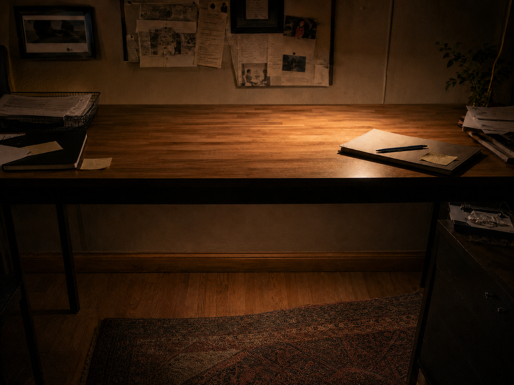
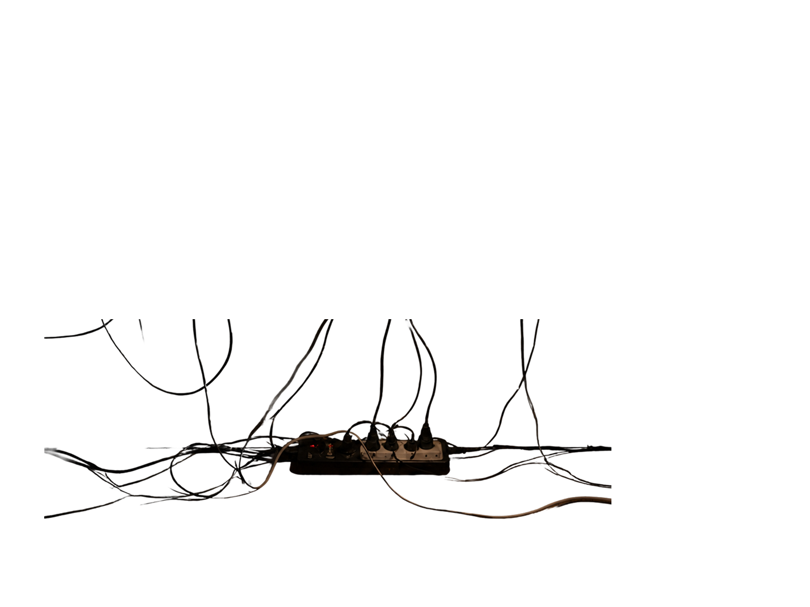
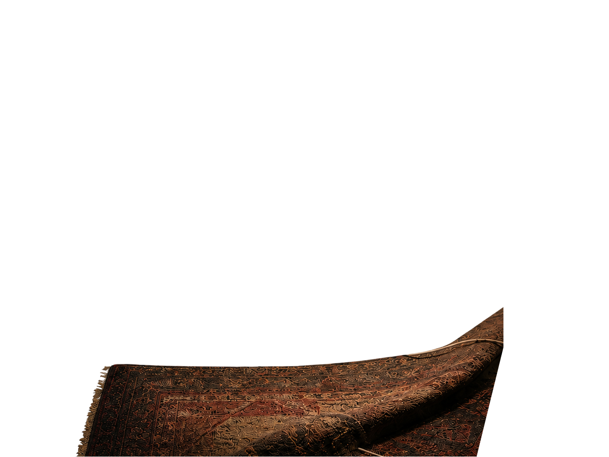
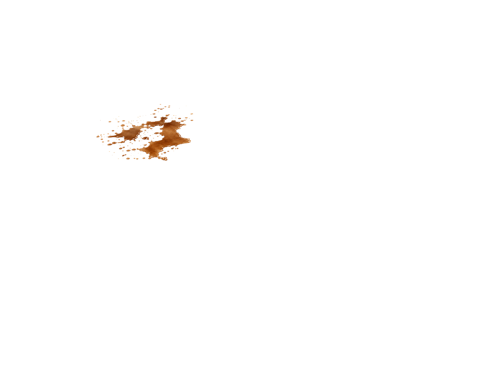
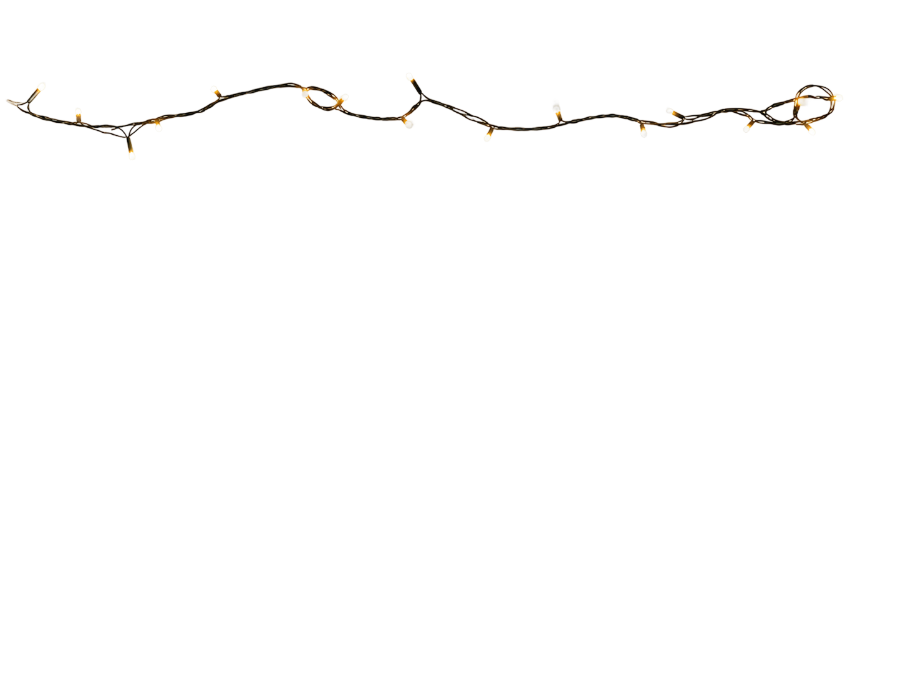
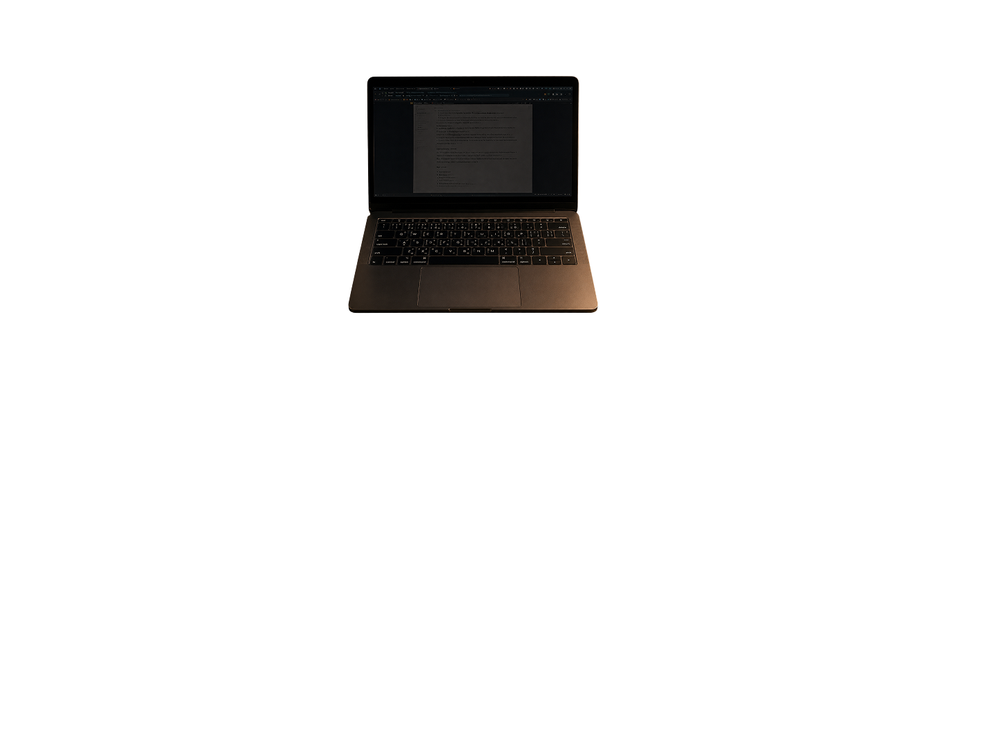
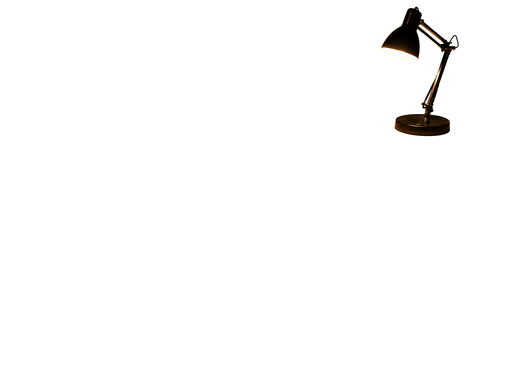
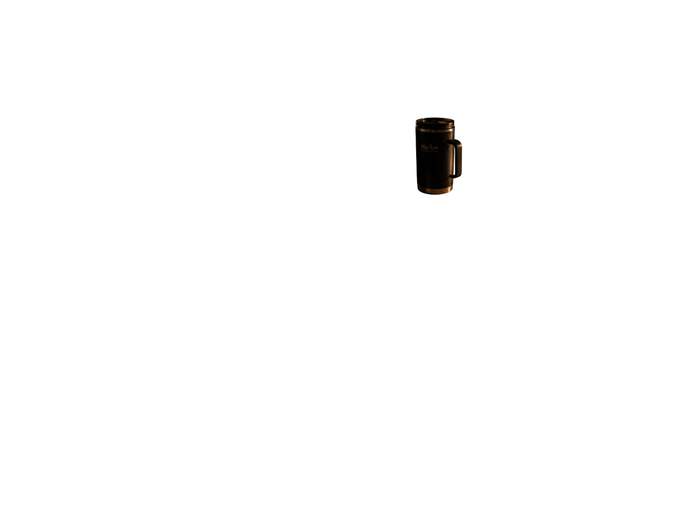
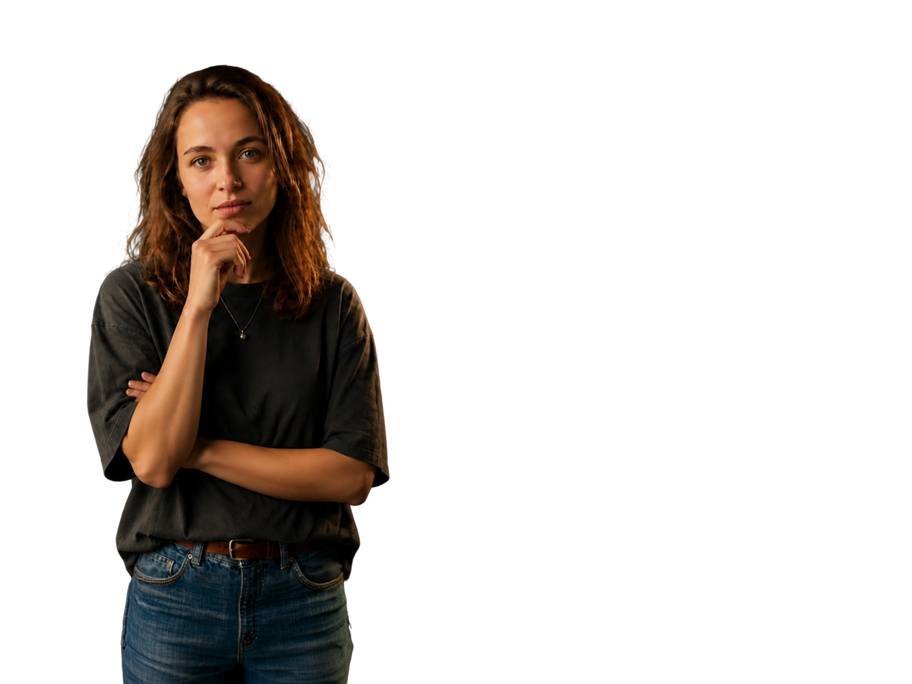

29 декабря, в последний рабочий день перед праздниками, в офисе сработала пожарная сигнализация.
Изучи место инцидента и выясни, что стало причиной задымления.
1
Осмотри место инцидента
→
2
Поговори со свидетелем
→
3
Собери версию событий
→
4
Узнай, как это предотвратить








0 / 7
👆 Нажми на первый подозрительный предмет
Исследуй все улики по порядку, чтобы восстановить картину произошедшего
↓
Все улики собраны. Теперь нужно понять контекст произошедшего.

Коллега, который сидел рядом с местом инцидента, готов рассказать, что произошло в тот день.
Коллега
✦ Версия событий
Какая версия объясняет задымление?
На основе улик и показаний свидетеля выбери наиболее вероятную цепочку событий.
А
Высокая нагрузка и спешка → несколько устройств в одном фильтре → провода под ковром → жидкость рядом с техникой → перегрев или короткое замыкание → задымление.
Б
Слабое освещение → сотрудник поздно ушёл → пожарная сигнализация сработала случайно.
В
На рабочем месте была гирлянда → только она и стала причиной инцидента.
Картина инцидента восстановлена
Инциденты редко возникают из-за одного действия. Чаще это цепочка факторов: высокая нагрузка, спешка, перегруженный удлинитель, небезопасные провода, жидкость рядом с техникой и сниженное внимание к базовым правилам.
Цепочка событий
Высокая нагрузка и спешка перед праздниками
Подключение нескольких устройств в один сетевой фильтр
Провода под ковром, слабое освещение — проблема не замечена
Жидкость оказалась рядом с техникой
Перегрев или короткое замыкание
🔥 Задымление и срабатывание сигнализации
Опасную ситуацию проще предотвратить до того, как появился дым. Следи за состоянием техники, не перегружай сеть, держи жидкости подальше от электроприборов и не игнорируй первые признаки риска.